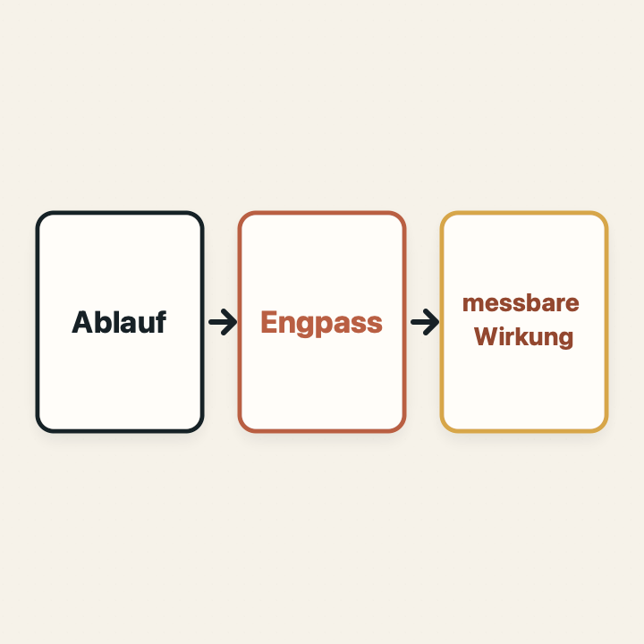

Digitalisierung im Handwerk ist keine Auswahl möglichst vieler Funktionen. Sie ist die gezielte Verbesserung eines konkreten Arbeitsablaufs – nachvollziehbar für die Menschen, die ihn täglich ausführen.

Warum der Einstieg über Software häufig zu früh kommt
Wenn Informationen fehlen, doppelt erfasst werden oder zu spät ankommen, liegt die Frage nach einer digitalen Lösung nahe. Dann beginnt die Suche schnell bei Funktionen: App, Dashboard, künstliche Intelligenz, Automatisierung oder Schnittstelle.
Damit wird jedoch häufig eine Lösung beschrieben, bevor das Problem ausreichend eingegrenzt ist. Unklare Zuständigkeiten, unnötige Freigaben oder widersprüchliche Datenbegriffe verschwinden nicht, weil ein Bildschirm hinzukommt. Sie werden im ungünstigsten Fall nur schneller und dauerhafter ausgeführt.
Die bessere Ausgangsfrage lautet deshalb: Welcher konkrete Arbeitsablauf soll für welche beteiligten Personen verlässlicher, einfacher oder schneller werden?
Leitgedanke
Ein schlechter Ablauf wird durch Software nicht automatisch gut. Bevor automatisiert wird, muss sichtbar sein, welche Arbeit tatsächlich notwendig ist und wo die entscheidende Reibung entsteht.
Drei Ebenen trennen: Ablauf, Engpass und Wirkung
Eine belastbare Digitalisierung trennt drei Fragen, die im Projektalltag leicht vermischt werden.
Diese Trennung verhindert, dass ein sichtbares Symptom vorschnell zur Ursache erklärt wird. Eine verspätete Bestellung kann beispielsweise an der Eingabe liegen. Sie kann aber ebenso durch fehlende Bestandsinformationen, eine unklare Freigabe oder wechselnde Zuständigkeiten entstehen.
Den wirklichen Arbeitsablauf beobachten
Prozessbeschreibungen zeigen häufig, wie Arbeit vorgesehen ist. Für die Digitalisierung zählt zusätzlich, wie sie unter Zeitdruck tatsächlich erledigt wird.
Eine kurze Beobachtung entlang eines konkreten Falls liefert dafür mehr als eine allgemeine Aussage wie „Die Abstimmung kostet zu viel Zeit“. Hilfreich sind Fragen wie:
- Wer stößt den Ablauf wodurch an?
- Welche Informationen werden zu welchem Zeitpunkt benötigt?
- Wo werden Daten abgeschrieben, weitergeleitet oder erneut eingegeben?
- Welche Rückfragen und Ausnahmen treten wiederholt auf?
- Wer trifft die Entscheidung und worauf stützt sie sich?
- Woran ist erkennbar, dass der Ablauf abgeschlossen ist?
Dabei geht es nicht darum, Mitarbeitende zu kontrollieren. Umwege sind häufig sinnvolle Reaktionen auf fehlende Informationen oder Werkzeuge. Sie zeigen, wo der heutige Ablauf seine Beteiligten nicht ausreichend unterstützt.
Symptom und Ursache nicht verwechseln
Ein sichtbares Problem kann mehrere Ursachen haben. „Zu viele Rückfragen“ ist zunächst eine Beobachtung. Die Ursache könnte eine unvollständige Übergabe, ein uneinheitlicher Artikelname, fehlender Zugriff oder eine Entscheidung ohne klare Verantwortung sein.
Bevor eine Lösung festgelegt wird, sollte jede vermutete Ursache mit einem konkreten Fall geprüft werden. Andernfalls besteht die Gefahr, genau die falsche Stelle zu digitalisieren.
Eine einfache Arbeitsregel hilft: Beobachtung, Interpretation und Lösungsidee werden getrennt notiert. So bleibt sichtbar, was tatsächlich gesehen wurde und was bisher nur eine Annahme ist.
Ein vereinfachtes Beispiel aus dem Lebensmittelhandwerk
Das folgende Beispiel beschreibt keinen konkreten Betrieb. Es zeigt lediglich, wie sich die drei Ebenen unterscheiden lassen.
Eine Filiale meldet am Nachmittag ihren Bedarf für den nächsten Tag. Die Information wird zunächst auf Papier notiert, später telefonisch ergänzt und anschließend in eine Tabelle übertragen. In der Produktion fehlen mehrfach einzelne Mengen oder Änderungen.
Die erste Lösungsidee könnte eine Bestell-App sein. Die genauere Betrachtung kann jedoch unterschiedliche Engpässe zeigen:
- Der Bedarf wird zu einem Zeitpunkt gemeldet, an dem wichtige Verkaufsinformationen noch fehlen.
- Artikel werden in Filiale und Produktion unterschiedlich bezeichnet.
- Nachträgliche Änderungen haben keinen eindeutigen Status.
- Es ist nicht klar, welche Person die finale Menge bestätigt.
Je nach Ursache kann die kleinste wirksame Lösung eine einheitliche Liste, eine klare Freigaberegel, eine vorhandene Standardfunktion oder erst danach eine individuelle Anwendung sein.
Messbare Wirkung vor der Lösung festlegen
„Digitaler“ ist kein ausreichendes Erfolgskriterium. Vor einem Pilot sollte feststehen, welche betriebliche Veränderung erwartet wird.
Je nach Ablauf kommen wenige, verständliche Messgrößen infrage:
- Bearbeitungszeit pro Vorgang,
- Anzahl notwendiger Rückfragen oder Korrekturen,
- Wartezeit zwischen Übergabe und Entscheidung,
- Fehler durch doppelte oder manuelle Übertragung,
- Vollständigkeit benötigter Informationen,
- Termintreue oder Reaktionszeit.
Eine Messgröße muss nicht perfekt sein. Sie muss vor und während des Piloten gleich angewendet werden. Nur dann lässt sich beurteilen, ob eine Veränderung tatsächlich geholfen hat oder lediglich neu wirkte.
Standardsoftware, Anpassung oder Individualentwicklung?
Nach der Prozessklärung wird die technische Entscheidung meist einfacher. Standardsoftware ist häufig richtig, wenn sie den vereinfachten Kernablauf abbildet, notwendige Schnittstellen mitbringt und der Betrieb seine Arbeitsweise sinnvoll an den Standard anpassen kann.
Eine individuelle Lösung wird interessanter, wenn ein betrieblich wichtiger Ablauf dauerhaft nicht passend abgebildet werden kann, mehrere bestehende Systeme gezielt verbunden werden müssen oder ein bestätigter Vorteil eng mit der besonderen Arbeitsweise des Betriebs zusammenhängt.
Auch dann sollte nicht sofort das vollständige Zielsystem entstehen. Ein begrenzter Pilot kann zuerst zeigen, ob der neue Ablauf genutzt wird und die erwartete Wirkung erreicht.
Entscheidungsregel
Die kleinste wirksame Lösung hat Vorrang. Eine vorhandene Funktion, eine klare Regel oder eine strukturierte Tabelle kann wertvoller sein als eigens entwickelte Software, wenn sie den Engpass zuverlässig beseitigt.
Ein sinnvoller Pilot in vier Schritten
- Ist-Ablauf festhalten: Einen wiederkehrenden Fall beobachten und Beteiligte, Informationen, Übergaben und Ausnahmen dokumentieren.
- Engpass eingrenzen: Beobachtungen von Ursachenannahmen trennen und die wichtigste Annahme auswählen.
- Baseline erfassen: Wenige Messgrößen vor der Veränderung mit vertretbarem Aufwand dokumentieren.
- Kleine Veränderung prüfen: Lösung zeitlich und organisatorisch begrenzen, anschließend Wirkung und Nebenwirkungen gemeinsam auswerten.
Das Ergebnis kann ein Ausbau, eine Anpassung oder ein begründeter Verzicht auf weitere Technik sein. Alle drei Ergebnisse sind wertvoll, wenn sie eine größere Fehlinvestition verhindern.
Häufige Fragen zur Digitalisierung im Handwerk
Was ist der erste Schritt bei der Digitalisierung im Handwerk?
Der erste Schritt ist die Beobachtung eines konkreten wiederkehrenden Arbeitsablaufs. Dabei wird geklärt, wer beteiligt ist, welche Informationen benötigt werden und an welcher Stelle Zeit, Verlässlichkeit oder Übersicht verloren gehen.
Wie lässt sich ein Engpass im Arbeitsablauf erkennen?
Ein Engpass zeigt sich häufig durch Wartezeiten, Rückfragen, Mehrfacheingaben, Medienbrüche, unklare Zuständigkeiten oder Entscheidungen auf Basis unvollständiger Informationen. Beobachtungen sollten von vermuteten Ursachen getrennt werden.
Wann reicht Standardsoftware aus?
Standardsoftware ist oft die beste Wahl, wenn sie den vereinfachten Kernablauf ohne aufwendige Umwege abbildet, Schnittstellen vorhanden sind und die Arbeitsweise sinnvoll an den Standard angepasst werden kann.
Wie wird der Nutzen einer Digitalisierung gemessen?
Vor dem Pilot werden wenige betriebliche Messgrößen festgelegt, zum Beispiel Bearbeitungszeit, Rückfragen, Übertragungsfehler, Wartezeit oder Termintreue. Baseline und Pilotphase werden mit denselben Kriterien verglichen.